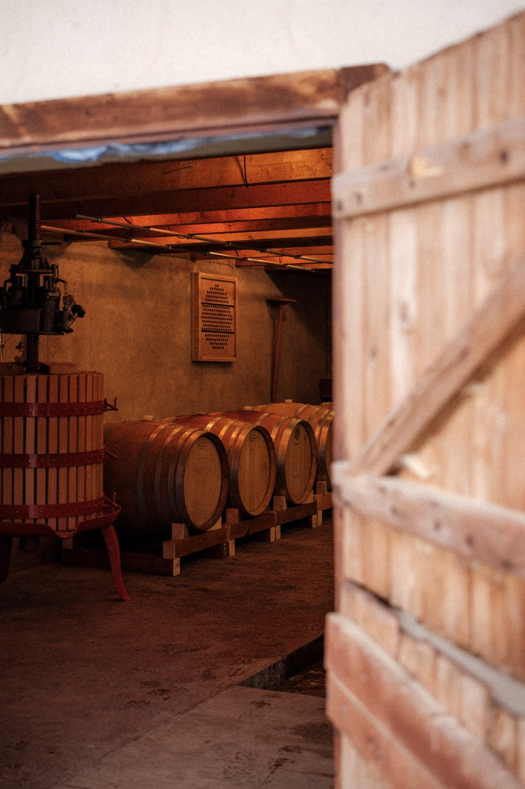
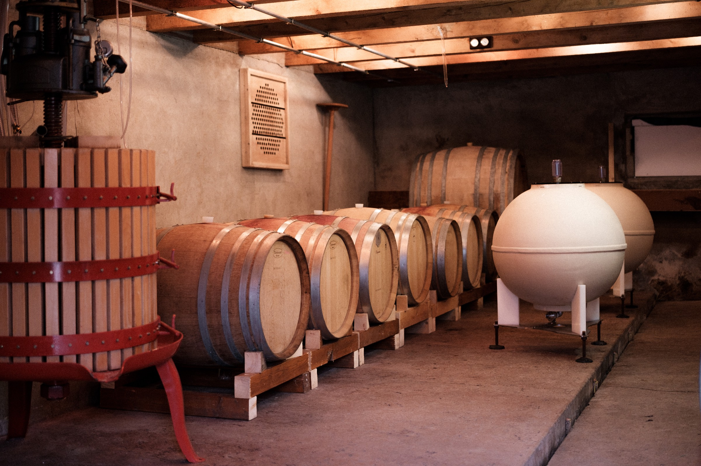

La Cave

La cave se situe dans l’ancienne étable du restaurant La Pinte des Mossettes, dans les Préalpes fribourgeoises. Elle m’a été gracieusement prêtée par mon patron, Nicolas Darnauguilhem, qui m’a soutenu dans mon projet dès le début. Ce lieu, qui ne servait plus depuis plusieurs années, a été transformé en une cave fonctionnelle grâce à l’aide de Cyril Rolli, bûcheron et voisin du restaurant. Ensemble, nous avons créé un espace chargé d’énergie positive et de travail. La cave, légèrement enterrée et située à une altitude qui lui assure des températures plutôt basses et régulières, s’avère parfaite pour le bon déroulement des fermentations.
